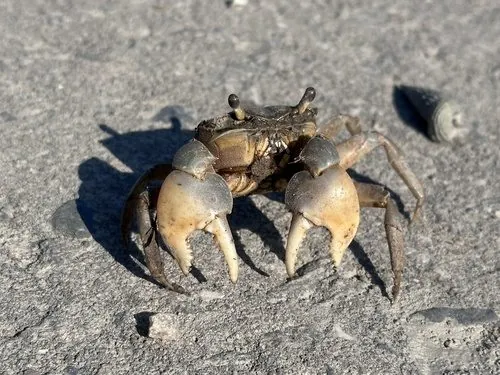

甲壳动物 · 动物界
侧足厚蟹 Helice latimera

背甲近方、螯足外侧带脊的小型泥滩蟹，栖于中国南方河口高潮区泥滩，掘洞密度高，会损坏堤岸。
- 分类
- 门节肢动物门纲软甲纲目十足目科弓蟹科属厚蟹属
- 栖息环境
- 河口潮间带上部泥滩、高盐沼泽与芦苇滩
- 地理分布
- 中国长江口以南至华南沿海，及朝鲜半岛、日本
- 保护级别
- 常见种，无保护需求；养殖区视为有害蟹类
物种志
侧足厚蟹的头胸甲宽约三厘米，近方形，背甲灰褐至深褐，表面粗糙，前缘有齿。螯足粗短，掌节外侧有一条明显的纵脊。步足侧扁，末对足桨状，边缘具毛。它的眼柄较长，退潮时在洞口张望，一有动静立刻缩进洞里，动作极快。
它分布于中国长江口以南至华南的河口泥滩，以及朝鲜半岛和日本，栖息在潮间带上部的高盐沼泽和泥滩，洞口密集时能把整片泥滩挖得像海绵。它以有机碎屑、藻类和底栖小动物为食，退潮后活动，涨潮时封洞躲避。它是河口湿地生态系统的常见成员，为鸟类和鱼类提供食物，但密集的洞穴会削弱堤岸和养殖塘的稳固性。
形态与习性
- 甲宽约三厘米，近方形
- 背甲灰褐至深褐，表面粗糙
- 螯足粗短，掌节外侧有明显纵脊
- 掘洞洞口密集，泥滩如海绵
- 食性有机碎屑、藻类与底栖小动物
- 习性退潮活动，涨潮封洞
趣味知识
- 它的洞一个挨一个，整片泥滩被挖得像一块多孔的海绵。
- 退潮时它站在洞口张望，人一走近就瞬间消失，只留一圈水波。
- 它和天津厚蟹一样，是修堤人最头疼的邻居。